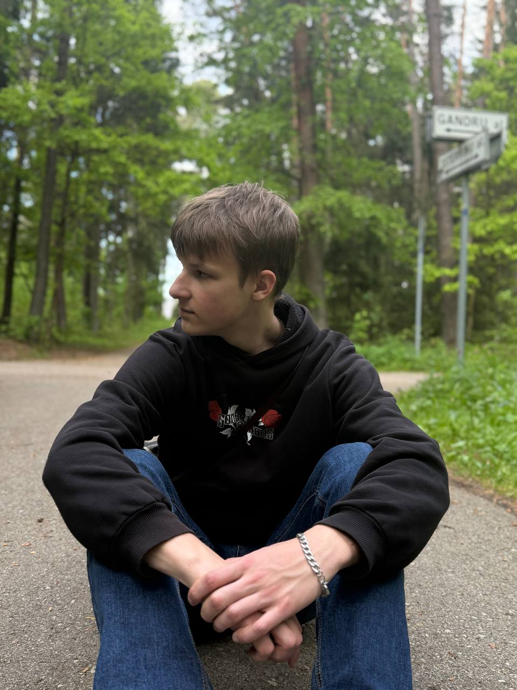

Anton 19 years old
I am originally from Ukraine, from the city of Zaporizhia. I lived on Khortytsia Island, a Cossack island known for its long and colorful history. Now I am studying at Vilnius University, at the Faculty of Information Systems and Cybersecurity in Kaunas. I am teaching myself front-end development because I find it interesting. I like it because I can see that I am making a difference.